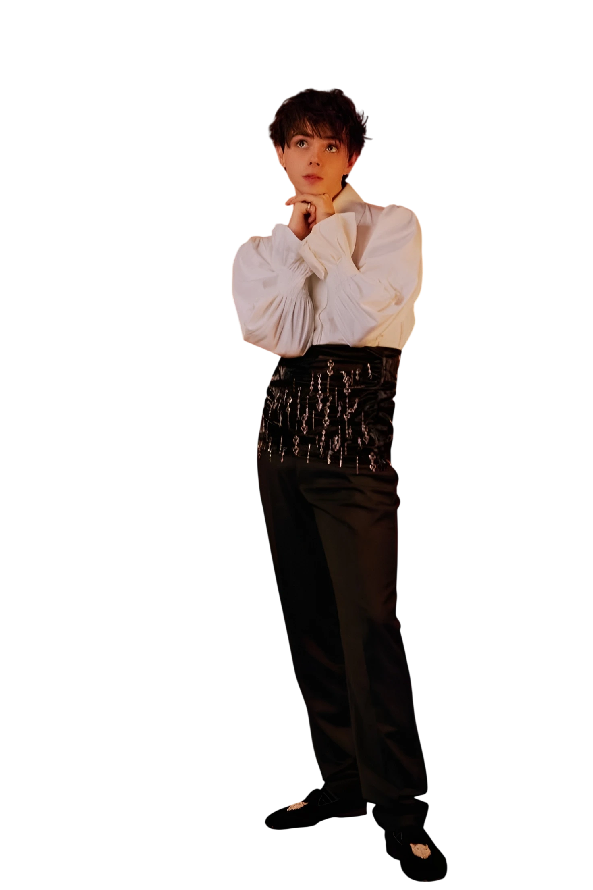

A smile with a hidden edge. Enter archive Open the Ichika Amasawa character archive Actor Archive Wolfe Quiet intensity.

A performer between worlds. Enter archive

Open the Jack Wolfe character archive02 stories

Open the Jack Wolfe character archive